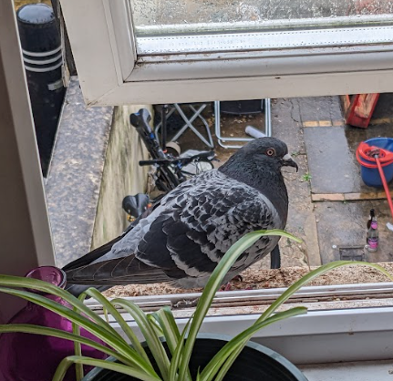
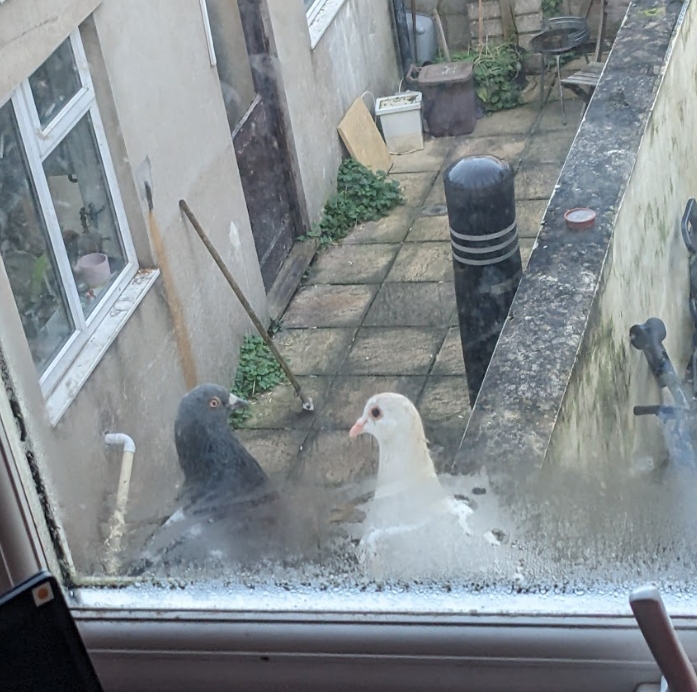
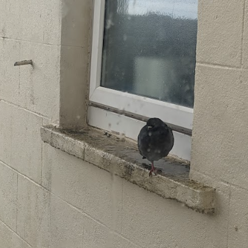
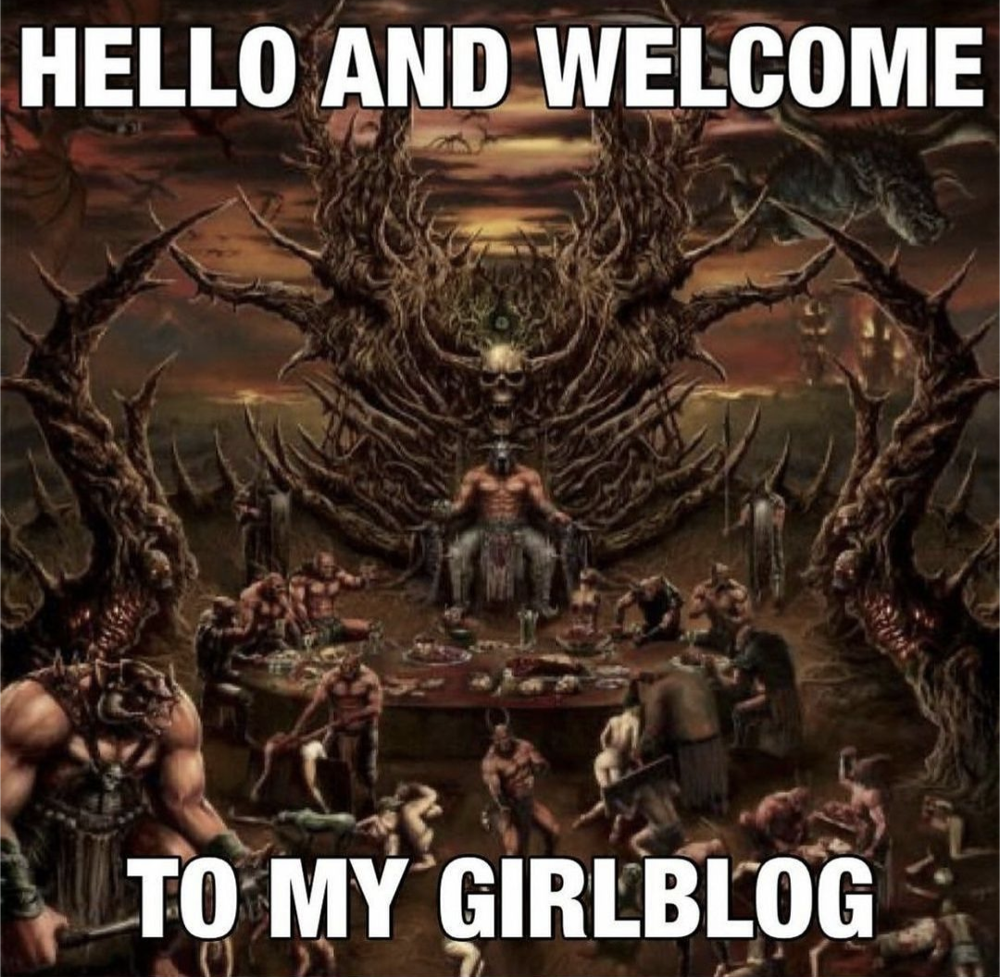
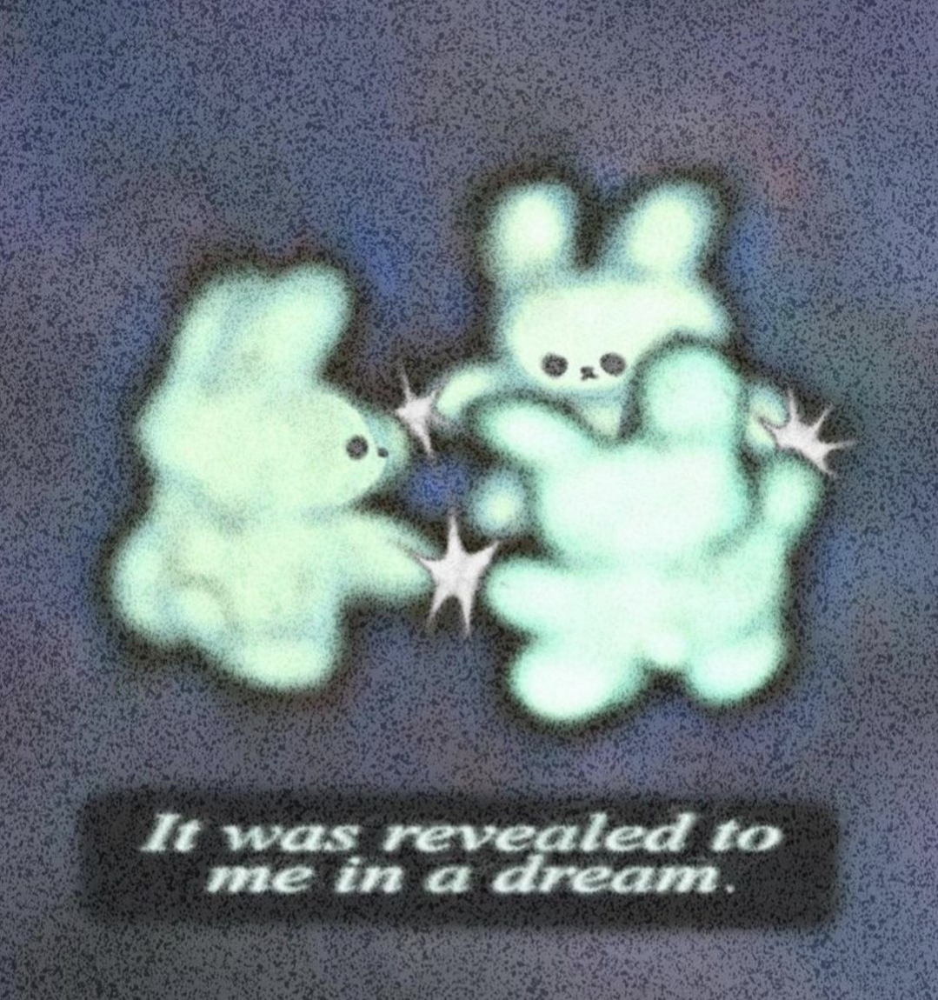
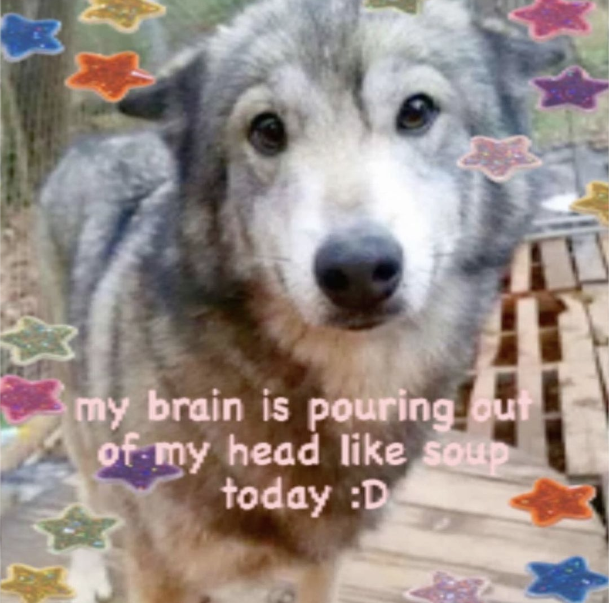

about the lad
roscoe is a feral pigeon with an overgrown beak. he struggles to eat enough on his own so we feed him ~2x per day from my windowsill.
he's been coming to us since early march 2024, and is very vocal when he wants food or attention <3 he loves to chat!
lovebirdz
very occasionally, + usually when im not in, roscoe brings his pretty gf porcelina to breakfast. she is v skittish, white with a pink beak and a single streak of black in her tail. shhh don't tell roscoe how much i love her...
21:24 05/04/2024rainy hangouts
when it rains, roscoe comes to keep us company between my windowsill + the br's. if we have the window open, he will come take shelter underneath (too cute) and go into loaf form until it dries up outside. if not he often stands on one leg like this. funny lil critter
21:42 05/04/2024~ blog pilot ~
i will put my thoughts here sometimes
22:22 31/03/2024~ dream reflection ~
lately, i dream of a complex. long, winding, connecting via halls and narrow stairways. all the people in my life live here, as it expands out into houses and countryside on the outer layers, while opening up into institutional corridors from the 'front'. i go here every night, so vivid it overlays my perception of reality. i had hoped you wouldnt appear here
22:28 31/03/2024~ rot day ~
when my brain is too full i struggle to be present. today it made me clock out for a hot second and make a fool of myself. i will try to listen to myself more to reduce the occurence of these glitches...
18:59 05/04/2024~ thoughts while developing ~
the problem solving learned from coding can be applied to every area of life, which often makes me brutally aware of what i could be doing to better myself. sometimes, i wonder if all i am is code - a program running on strange fleshy hardware. i feel more akin to dll models than a lot of the people i observe.
21:01 05/04/2024